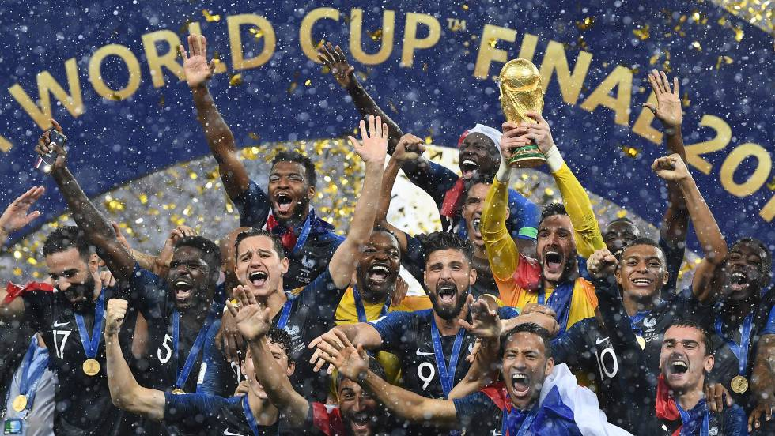

La Copa Mundial de la FIFA Rusia 2018 (en ruso: Чемпионат мира по футболу Россия 2018) fue la vigésima primera edición de la Copa Mundial de Fútbol masculino organizada por la FIFA. Esta edición del evento se realizó entre el 14 de junio y el 15 de julio de 2018 en Rusia, que consiguió los derechos de organización el 2 de diciembre de 2010. Esta fue la undécima vez que la Copa del Mundo se disputó en el continente europeo, y la primera que se celebró en Europa Oriental. También por primera vez, el torneo tiene lugar en dos continentes: Europa y Asia, dada la ubicación de la ciudad de Ekaterimburgo, una de las sedes. Con un costo estimado de más de 14 200 millones de dólares, es la Copa del Mundo más cara de la historia. Por otra parte, es la primera vez que se utilizó el Árbitro asistente de video (VAR) y un balón oficial con un chip incorporado para seguir los partidos en vivo mediante una aplicación en esta competencia. El campeón fue Francia, que derrotó por 4-2 a Croacia —selección que llegaba por primera vez a la final— y se consagró por segunda vez después de 20 años (en 1998 ganó el Mundial en calidad de anfitrión).
